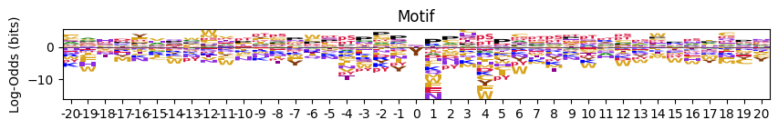
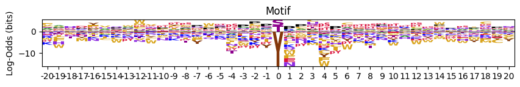
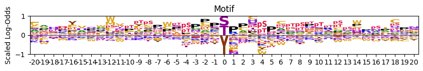
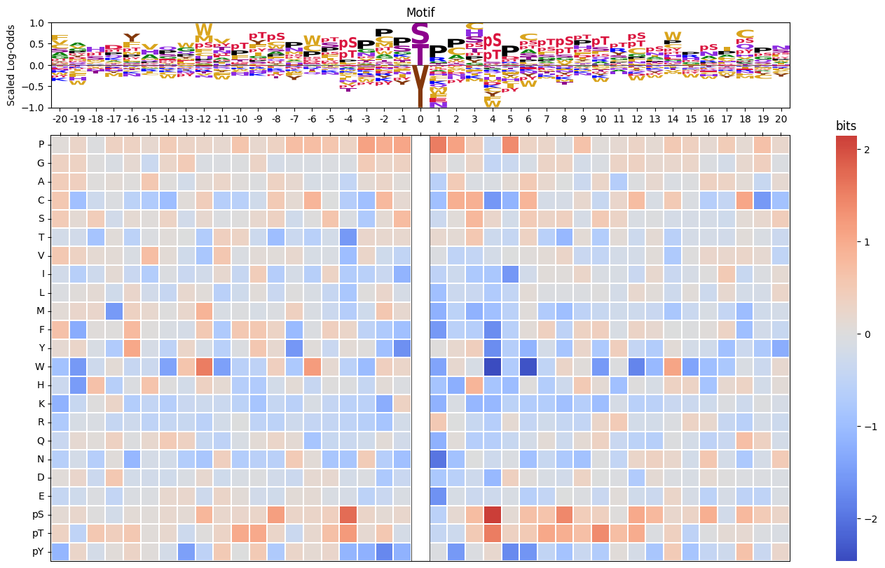

from katlas.data import *pssm.lo
calculation of log-odds PSSM and visualization
Overview
Log-Odds PSSM Calculation
To compute a log-odds Position-Specific Scoring Matrix (PSSM) by comparing observed amino acid frequencies against a background model:
pssm_LO = get_pssm_LO(
pssm_df=pssm_df, # DataFrame of amino acid frequencies (rows=aa, cols=positions)
site_type='STY', # background model: 'S', 'T', 'Y', 'ST', or 'STY'
)To compute a log-odds PSSM from a flattened (1D) frequency representation:
pssm_LO = get_pssm_LO_flat(
flat_pssm=flat_pssm, # flattened PSSM as pd.Series
site_type='STY', # background model: 'S', 'T', 'Y', 'ST', or 'STY'
)Log-Odds Visualization
To visualize a log-odds PSSM as a sequence logo where letter heights reflect enrichment/depletion:
plot_logo_LO(
pssm_LO=pssm_LO, # log-odds PSSM DataFrame
title='Motif', # plot title
acceptor=None, # force display of central residue: 'S', 'T', or 'Y'
scale_zero=True, # rescale position 0 to match max stack height
scale_pos_neg=True, # normalize positive/negative stacks for visibility
ax=None, # matplotlib Axes (creates new if None)
figsize=(10, 1), # figure dimensions (width, height)
)To display both a sequence logo and a heatmap of log-odds values in a combined figure:
plot_logo_heatmap_LO(
pssm_LO=pssm_LO, # log-odds PSSM DataFrame
title='Motif', # plot title
acceptor=None, # force display of central residue: 'S', 'T', or 'Y'
figsize=(17, 10), # figure dimensions (width, height)
include_zero=False, # include position 0 in heatmap
scale_pos_neg=True, # normalize color scale for positive/negative values
)Setup
data = Data.get_ks_dataset()
data_k = data[data.kinase_uniprot=='P49841'] # CDK1
pssm_df=get_prob(data_k, col='site_seq')Calculate
get_pssm_LO
def get_pssm_LO(
pssm_df, site_type, # S, T, Y, ST, or STY
):
Get log odds PSSM: log2 (freq pssm/background pssm).
Let \(P_i(x)\) be the frequency of amino acid \(x\) at position \(i\) in the input PSSM, and let \(B_i(x)\) be the background frequency of amino acid \(x\) at the same position, derived from a background model corresponding to the specified site type (S, T, Y, or STY).
The log-odds score at each position \(i\) for amino acid \(x\) is computed as:
\[ \mathrm{LO}_i(x) = \log_2 \left( \frac{P_i(x) + \varepsilon}{B_i(x) + \varepsilon} \right) \]
where \(\varepsilon = 10^{-8}\) is a small constant added for numerical stability and to avoid division by zero.
This results in a matrix where:
- Positive values indicate enrichment over background,
- Negative values indicate depletion relative to background,
- Zero indicates no difference from the expected background.
pssm_LO = get_pssm_LO(pssm_df,'STY')
pssm_LO.head()| Position | -20 | -19 | -18 | -17 | -16 | -15 | -14 | -13 | -12 | -11 | -10 | -9 | -8 | -7 | -6 | -5 | -4 | -3 | -2 | -1 | 0 | 1 | 2 | 3 | 4 | 5 | 6 | 7 | 8 | 9 | 10 | 11 | 12 | 13 | 14 | 15 | 16 | 17 | 18 | 19 | 20 |
|---|---|---|---|---|---|---|---|---|---|---|---|---|---|---|---|---|---|---|---|---|---|---|---|---|---|---|---|---|---|---|---|---|---|---|---|---|---|---|---|---|---|
| aa | |||||||||||||||||||||||||||||||||||||||||
| P | 0.059908 | 0.281140 | -0.026749 | 0.355318 | 0.346468 | 0.178779 | 0.463147 | 0.308758 | 0.239997 | 0.179283 | 0.608034 | 0.192985 | 0.329370 | 0.721201 | 0.715760 | 0.588674 | 0.320993 | 1.112040 | 0.973481 | 1.055403 | 0.0 | 1.539081 | 1.109428 | 0.434700 | -0.301588 | 1.379883 | 0.314032 | 0.243357 | -0.060158 | 0.644231 | 0.061865 | 0.161917 | 0.308782 | 0.140834 | 0.521194 | 0.373708 | 0.158627 | 0.462854 | 0.138734 | 0.658643 | 0.216764 |
| G | 0.355425 | 0.331928 | 0.015762 | -0.090070 | 0.155057 | -0.318908 | 0.274539 | 0.486357 | -0.081333 | -0.044640 | -0.023817 | 0.297183 | -0.167014 | -0.096944 | -0.092276 | -0.064319 | -0.075365 | 0.473975 | 0.243292 | 0.358158 | 0.0 | 0.235499 | -0.025131 | 0.284594 | -0.457652 | -0.327199 | -0.123033 | 0.303309 | 0.315783 | -0.190655 | -0.067465 | 0.298568 | 0.361469 | 0.170286 | 0.215167 | 0.258789 | -0.054255 | -0.185829 | 0.200256 | 0.388134 | -0.066157 |
| A | 0.445724 | 0.399204 | 0.032468 | 0.105841 | 0.037853 | 0.527832 | 0.039466 | -0.201953 | 0.117073 | 0.243623 | 0.053728 | -0.015571 | 0.335906 | 0.169137 | -0.130969 | -0.098714 | -0.444541 | 0.119458 | 0.286568 | 0.060413 | 0.0 | -0.584316 | 0.490663 | -0.075931 | -0.078570 | 0.109301 | 0.496097 | 0.191241 | -0.008452 | -0.306504 | 0.241955 | -0.675462 | -0.013856 | 0.172464 | -0.080489 | -0.019176 | 0.360468 | 0.315254 | 0.109869 | -0.375457 | 0.164260 |
| C | 0.537945 | -0.956246 | -0.269417 | -0.055141 | -0.547438 | -0.718577 | -0.987818 | 0.075745 | 0.419542 | -0.634510 | -0.603081 | -0.233384 | 0.494481 | 0.142392 | 0.851304 | 0.003453 | -0.677106 | -0.935493 | 0.789298 | 0.156753 | 0.0 | -0.937435 | 0.945576 | 0.925658 | -1.573420 | -1.149739 | 0.860460 | -0.169595 | -0.143715 | 0.200914 | -0.385030 | 0.235879 | 0.725572 | -0.115854 | 0.491228 | -0.070391 | -0.647993 | -0.426118 | 1.057556 | -1.543537 | -0.898042 |
| S | 0.482063 | 0.128128 | 0.452159 | -0.214803 | 0.139830 | 0.049341 | 0.317830 | -0.214082 | 0.175540 | -0.036560 | 0.017835 | 0.187378 | 0.362312 | -0.239848 | 0.014115 | 0.612648 | -0.070659 | -0.737274 | 0.126846 | 0.744032 | 0.0 | -0.314505 | 0.076891 | 0.803635 | 0.224781 | -0.198496 | 0.474760 | 0.303879 | 0.367185 | -0.142147 | 0.492529 | 0.309106 | -0.086104 | -0.016800 | -0.160346 | -0.145271 | -0.167390 | -0.262078 | 0.101268 | 0.189145 | 0.426381 |
get_pssm_LO_flat
def get_pssm_LO_flat(
flat_pssm, site_type, # S, T, Y, ST, or STY
):
flat_pssm=pd.Series(flatten_pssm(pssm_df))pssm_LO = get_pssm_LO_flat(flat_pssm,'STY')
pssm_LO| Position | -20 | -19 | -18 | -17 | -16 | -15 | -14 | -13 | -12 | -11 | -10 | -9 | -8 | -7 | -6 | -5 | -4 | -3 | -2 | -1 | 0 | 1 | 2 | 3 | 4 | 5 | 6 | 7 | 8 | 9 | 10 | 11 | 12 | 13 | 14 | 15 | 16 | 17 | 18 | 19 | 20 |
|---|---|---|---|---|---|---|---|---|---|---|---|---|---|---|---|---|---|---|---|---|---|---|---|---|---|---|---|---|---|---|---|---|---|---|---|---|---|---|---|---|---|
| aa | |||||||||||||||||||||||||||||||||||||||||
| P | 0.059908 | 0.281140 | -0.026749 | 0.355318 | 0.346468 | 0.178779 | 0.463147 | 0.308758 | 0.239997 | 0.179283 | 0.608034 | 0.192985 | 0.329370 | 0.721201 | 0.715760 | 0.588674 | 0.320993 | 1.112040 | 0.973481 | 1.055403 | 0.000000 | 1.539081 | 1.109428 | 0.434700 | -0.301588 | 1.379883 | 0.314032 | 0.243357 | -0.060158 | 0.644231 | 0.061865 | 0.161917 | 0.308782 | 0.140834 | 0.521194 | 0.373708 | 0.158627 | 0.462854 | 0.138734 | 0.658643 | 0.216764 |
| G | 0.355425 | 0.331928 | 0.015762 | -0.090070 | 0.155057 | -0.318908 | 0.274539 | 0.486357 | -0.081333 | -0.044640 | -0.023817 | 0.297183 | -0.167014 | -0.096944 | -0.092276 | -0.064319 | -0.075365 | 0.473975 | 0.243292 | 0.358158 | 0.000000 | 0.235499 | -0.025131 | 0.284594 | -0.457652 | -0.327199 | -0.123033 | 0.303309 | 0.315783 | -0.190655 | -0.067465 | 0.298568 | 0.361469 | 0.170286 | 0.215167 | 0.258789 | -0.054255 | -0.185829 | 0.200256 | 0.388134 | -0.066157 |
| ... | ... | ... | ... | ... | ... | ... | ... | ... | ... | ... | ... | ... | ... | ... | ... | ... | ... | ... | ... | ... | ... | ... | ... | ... | ... | ... | ... | ... | ... | ... | ... | ... | ... | ... | ... | ... | ... | ... | ... | ... | ... |
| t | 0.338037 | -0.508472 | 0.536544 | 0.409825 | 0.546294 | 0.066828 | 0.190809 | -0.298146 | 0.023876 | 0.295761 | 0.995227 | 1.015112 | 0.246666 | -0.332277 | 0.195250 | 0.680780 | 1.210743 | 0.166721 | 0.546415 | -0.157283 | 0.329833 | -0.420698 | -0.286888 | 0.507349 | 1.536109 | 0.349480 | 0.508819 | 1.032751 | 0.944610 | 0.697806 | 1.386345 | 0.723589 | 0.986439 | -0.036165 | 0.368048 | -0.516571 | -0.021008 | 0.119857 | 0.161114 | -0.047991 | -0.097686 |
| y | -1.109821 | 0.265760 | -0.184739 | 0.075387 | 0.307806 | 0.041911 | -0.180464 | -1.440588 | -0.516052 | 0.508038 | -0.011805 | 0.496492 | -0.749242 | 0.261563 | 0.139186 | 0.233321 | -1.138437 | -1.195610 | -1.747661 | -1.166771 | -2.655631 | -0.065791 | -1.535247 | -0.045814 | 0.191191 | -1.732180 | -1.613038 | -0.465142 | -0.886647 | -0.336320 | -0.712011 | 0.069406 | -0.161659 | -0.829713 | 0.474154 | -0.851437 | -0.438485 | -0.267581 | 0.642920 | -0.356680 | 0.230591 |
23 rows × 41 columns
Plot
plot_logo_LO
def plot_logo_LO(
pssm_LO, title:str='Motif', acceptor:NoneType=None, scale_zero:bool=True, scale_pos_neg:bool=True,
ax:NoneType=None, figsize:tuple=(10, 1)
):
Plot logo of log-odds given a frequency PSSM.
To ensure the phosphorylated residue is visible at the center of a log-odds motif (position 0), two mechanisms are used:
Acceptor override: If the center column is entirely zero (e.g., masked), the user can specify an
acceptor('S','T','Y', or'STY'). The function then assigns a small nonzero value (e.g., 0.1) to the corresponding phospho-residue row (pS,pT,pY) at position 0. This ensures the central letter appears in the logo plot, even when real log-odds values are absent.Stack height rescaling: To maintain visual consistency with surrounding columns, position 0 is rescaled so that its total positive and negative stack heights match the most extreme values observed elsewhere.
Together, these adjustments ensure that: - The phospho-acceptor appears explicitly at the center, - The visual scale remains consistent with neighboring positions, - The resulting logo can faithfully reflect both biological relevance and statistical signal.
pssm_LO = get_pssm_LO(pssm_df,'STY')
plot_logo_LO(pssm_LO,scale_zero=False,scale_pos_neg=False)
# with zero position scaled to the max
plot_logo_LO(pssm_LO,scale_zero=True,scale_pos_neg=False)
# scaled positive and negative values for better visualization
plot_logo_LO(pssm_LO,scale_zero=True,scale_pos_neg=True)
# # for those specific site type (S,T or Y), show acceptor in the middle instead of empty
# pssm_LO = get_pssm_LO(pssm_y,'Y')
# plot_logo_LO(pssm_LO,acceptor='Y')plt.close('all')plot_logo_heatmap_LO
def plot_logo_heatmap_LO(
pssm_LO, # pssm of log-odds
title:str='Motif', acceptor:NoneType=None, figsize:tuple=(17, 10), include_zero:bool=False,
scale_pos_neg:bool=True
):
Plot logo and heatmap of enrichment bits vertically
# plot_logo_heatmap_LO(pssm_LO,acceptor='Y')pssm_LO = get_pssm_LO(pssm_df,'STY')
plot_logo_heatmap_LO(pssm_LO,scale_pos_neg=False) # normal color scale
plt.close('all')